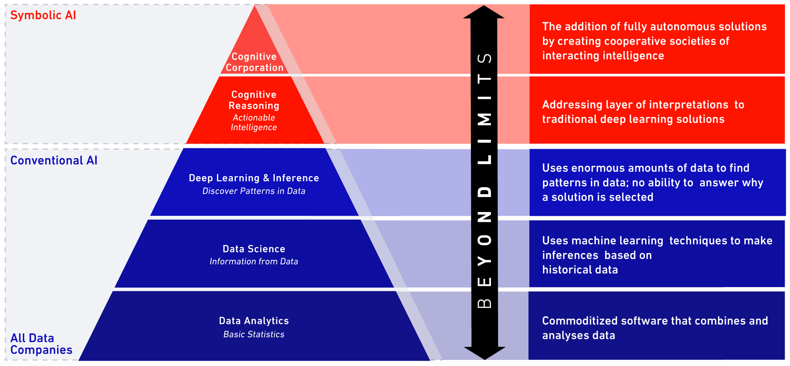
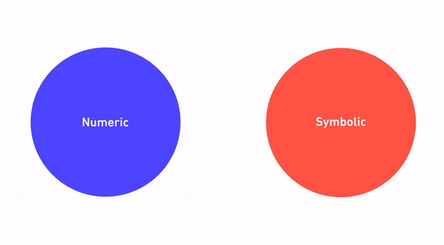

Beyond Conventional AI: More Intelligent, More Explainable AI
Evolution of AI
We are living in an era that is showing massive growth in data and computing power. We have seen a lot of progress in machine learning and deep learning, but there is an ever-growing need for more intelligent, more explainable AI.
Most people’s perception of artificial intelligence boils down to either science fiction, or what we call conventional AI.
The foundations of conventional AI are numerical techniques like data analytics, including statistical analysis, modeling, and machine learning. This has been the primary approach to AI over the past few decades with significant success by numerous companies in many industries.
Data science has recently emerged as a hot topic in the industry over the last couple of years and has relied heavily on machine learning driven by more sophisticated algorithms and computing power. This approach has produced decent achievements, especially more recently, and has led to the development of deep learning. Companies like Google DeepMind are big players in this field, which has seen varying degrees of success in enterprise and industry.
However, conventional AI still falls short of delivering value for complex, high-value industrial assets, especially in less-than-ideal conditions. Despite their ability to crunch numbers and find answers, most conventional AI or numeric approaches fail at delivering explainability and a clear understanding of how the answer was produced.
Conventional AI isn’t transparent about why conclusions were made, how that information can be used to support critical decision-making, and how feedback loops can be instantiated so human experts can interact with the systems to make the process better over time.

Trust in the machine
In high-risk, high-value industries such as energy, healthcare, and finance there is too much at stake to trust the decisions of a machine at face value, with no explainable understanding of its reasoning. Since machine learning is a component for many AI systems, it’s important for us to know precisely what the machine is learning.
Machine learning is a great method for handling lots of data that can tell you the what. But for AI systems to become trusted advisors to human decision-makers they need to be able to explain the why.
In order to make an AI system explainable, we add symbolic reasoning on top of numerical calculation. Symbolic reasoning allows the system to think like a person and supply human-like reasoning to its recommendations. This hybrid approach combining conventional, numeric techniques with symbolic reasoning is called cognitive AI. To comprehend this more intuitive approach, we have to turn to space exploration.
From conventional to cognitive AI

Deep learning is the point at which conventional AI stops; but that’s exactly where the cognitive AI layer begins.
Symbolic AI: A key to the cognitive lock

Conventional AI relies on interpreting data to find patterns, but what happens in deep space where there’s no historical data to analyze? This is where symbolic AI becomes key.
Symbolic AI has deep roots in the NASA unmanned space program. When the rest of the world was shifting to embrace the machine learning revolution, NASA kept investing in symbolic AI. Machine learning was not an option for NASA because there is little to no data in the unknown realms of deep space. The capability to handle changing conditions autonomously had to exist in order to support missions 150 million miles from Earth.
NASA’s Opportunity Rover was on a first-of-its-kind mission to Mars, where conditions are harsh, unknown, and unpredictable. The rover would need to solve mission-threatening problems on a daily basis in order to not only effectively carry out its main objective, but also to ensure operational support for all the scientific experiments (and other tasks) it had to accomplish. Born of these essential needs emerged crucial technologies that are the foundational building blocks for today’s cognitive AI.
AI lessons from space
Autonomy is critical
Autonomy was critical for the Mars Curiosity rover mission. The rover had to be self-reliant to navigate around its uncertain environment and be able to meet its objectives.
NASA didn't have a lot of data when they first sent the rover to Mars; they didn't know what the weather or the terrain was going to look like. Nevertheless, it was imperative that the system be endowed with all the proficiencies necessary to cope with that uncertainty, come out on the other side unscathed, and with something to show for it all.
Obviously, communication was extremely vital because while the rover was out exploring the mysteries of Mars, the engineers here on Earth could not rely on real-time communication. It takes seven minutes for a signal to travel 150 million miles and seven more minutes to return the call. We can hardly call this “real time.”
In order to understand precisely what the rover was doing, and the decisions it was making autonomously, it had to be able to communicate and let the engineers in on exactly what it was doing and why it was deciding on the actions it was taking in response to new scenarios.
For example, when the Mars rover first landed on its target planet, engineers knew that power management was going to be one of the most crucial issues for a successful mission. The system didn’t know how to solve every problem when it first arrived on Mars because it simply couldn’t be trained or educated about factors like weather or terrain in advance. Naturally, this knowledge was unavailable because the rover was traveling where nobody had gone before.
One of the dynamic pieces of technology at the core of the rover’s system is used today in Beyond Limits’ AI systems: hypothetical scenario generation (HSG).
Power management on Mars
When bad weather hit Mars, the rover had trouble recharging its solar panels until HSG kicked into action and taught itself to correlate evidence that it was getting from the environment (in terms of weather and additional sensor measurements) to achieve human-like reasoning.
Ultimately, the system itself taught the rover to turn its solar panels upside-down and shake off the accumulated dust blocking essential solar ray absorption. It executed human-like rationale to solve a problem in order to continue the mission. Through this feedback loop and autonomous learning, human-like cognitive thinking emerged.
JPL scientists found that the rover had managed to teach itself how to correlate sensory evidence with its mission objectives and build the first practical weather model of a distant planet.
As a result of intelligent power management, the mission was an incredible success, and actually extended far beyond the timeline scientists were initially projecting.
- Autonomy: Mars is 150 million miles from Earth. Neptune is 2.7 billion miles away. The distance is a barrier for centralized control so spacecraft must adapt to conditions without direct instruction.
- Uncertainty: System must reason through problems – even with missing or contradictory data.
- Understanding: Engineers and users need to trust the decisions of the system by checking consistency of its logic. If the system learns something new, we want to understand where the information comes from.
- Plan & React: The AI system knows the plan for its mission, but when the plan doesn’t work because of harsh or changing conditions, the AI system anticipates what could happen and adjusts on the fly.
- Communications: The AI system must be explainable and communicate with humans – sharing data and reasoning to build trust over time.
- Situational Awareness: The AI system perceives its environment and captures new, changed phenomena over time.
- Zero tolerance for failure: The mission must go on.
Uncovering the value of cognitive AI
Numeric + symbolic = the answer to achieving a cognitive AI system

So how did this experience in space translate into realizing the value of non-conventional AI, and how did it drive solutions for multifaceted problems here on Earth?
We came to an understanding that conventional AI needed to evolve into cognitive AI. We merged the power of conventional numeric AI approaches with technology that leverages symbolic artificial intelligence to produce cognitive AI engines, the heart of Beyond Limits' technology. This unique hybrid AI combines the best of numerical/statistical approaches with the best of symbolic/logical techniques to become greater than the sum of its parts.
Humans in the loop
Cognitive AI is successful because it tackles each problem through combining an understanding of the problem in terms of underlying theories, human knowledge, objectives, and priorities that need to be addressed. All of these components, in conjunction with the power of numerical systems, can ingest a variety of data across many different sources, and ultimately leverage today's most sophisticated numerical algorithms to extract valuable features and concepts.
The cognitive reasoning engine employs symbolic logic, human-like reasoning, intuition, cognitive planning, and common sense to hybridize a numeric and symbolic approach to deliver a true cognitive artificial intelligence system that helps people make better decisions.
Support for mission-critical decisions
Questions to ask & requirements for making mission critical decisions easier (and more transparent) when handling evidence:
- What are the risks and/or opportunities associated with these mission critical decisions?
- How can we quantify uncertainty, and communicate that back to the key players?
- How do we encode and leverage human expertise and experience to inform the cognitive reasoner?
- How do we make suggestions human experts can understand and rely on?
- How do we return to this system (as we acquire more knowledge and expertise) and ensure it has the ability to learn from the acquired information to become smarter, better, and more efficient over time?
Thinking for itself
If you really think about it, our cognitive technology is based on concepts. You can describe a concept at a strict algorithmic level, or you can choose to add more natural language components that give the system the ability to explain itself.
Beyond Limits’ cognitive systems have to say: “I have been educated to understand this kind of problem; you're presenting me with a set of features, so I need to manipulate those features relative to my education.” That process of manipulating the features in order to perform inductive, deductive, and abductive reasoning produces an explainable trail. If the natural language declarations are in place, then the system can (at a later time or in conjunction) produce natural language descriptions of what it's doing at any given moment.
Explainability becomes a powerful tool when AI engineers work with subject matter experts to learn about their respective specialties. The engineers study the specialty from an algorithm/process/detective perspective, and then annotate it in a form to enable the machine to provide explainability at a human level of understanding. This was a requirement for space missions that Beyond Limits’ scientists solved years ago.
AI at work
Beyond Limits’ Cognitive AI for refinery management is a prime example of how an explainable AI system can support people in challenging, high-stakes environments, where there may be extreme consequences to imperfect decisions. This technology unifies numeric and symbolic AI to act as a trusted partner to the humans working with intricate equipment every day. The cognitive system and human can collaboratively make decisions so the refinery may run as efficiently as possible.
The system accomplishes this by taking in data from all the refinery’s sensors to get a comprehensive picture of what exactly is happening in the facility, then using machine learning to analyze the data, identify trends and determine whether operations are headed in an undesirable direction.
Add in the symbolic layer (which includes information regarding: the refinery’s goals, best practices for operation, historical subject matter knowledge), and all elements work together to provide users with explainable, transparent resolutions to anticipated problems alongside trusted recommendations.
AI solutions such as this are designed for large-scale industrial facilities where complex processes need to be monitored and adjusted constantly to accommodate the flow of ongoing operations, shifting regulatory conditions, aging equipment with behavioral changes, oscillating market conditions, and numerous other factors.
From Return on Cognitive AI Investments to Revenue from AI (RAI)
The AI of tomorrow
In high-stakes industries like energy, clear, trust-worthy solutions for operations as large scale as a refinery can realistically reduce costs by 12%. With high-value assets producing high-value products, Beyond Limits’ Cognitive AI for refinery management can generate millions of dollars in extra profits.
Other Beyond Limits technologies have similar upside potential. For example: Cognitive AI for improving upstream performance, which can accelerate subsurface analysis from months down to hours and increase barrel production that leads to an additional $40MM in revenue a year.
Increasing productivity or reducing waste in large-scale, high-value industries, even by “small-number” percentages, can yield massive results. Results so significant, industry leaders will no longer have to focus on ROI; instead, they’ll be able to enjoy RAI, or revenue from artificial intelligence.